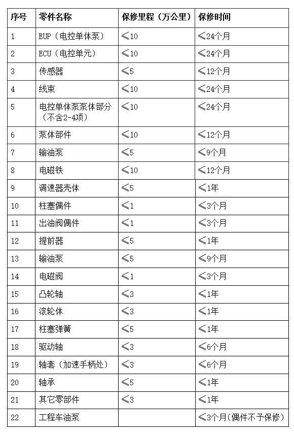

1.南岳电控（衡阳）工业技术股份有限公司（以下简称南岳公司）产品质量保修规定是指：南岳公司喷油泵总成类产品及其零部件在保用期内，按照产品使用手册和整机保养要求，正常使用的情况下，因产品设计、加工、装配、原材料、调试等方面存在不合格或缺陷而发生故障或零件损坏，影响正常使用，南岳公司一律给予免费保修或更换受损零部件,直至保证产品的正常使用。
2.南岳公司产品质量保修原则是：坚持以维修为主,原则上不予更换总成。能通过修理、调整解决的，就不更换零件；能通过更换零部件解决的，就不更换总成。修理后保证产品的正常使用。
3.南岳公司委托其市场营销部行使保修职权,南岳公司设立在各地的技术服务中心、技术服务站,是被授权承担公司产品保修的服务单位。
4.南岳公司不予承担用户发生的间接费用（如汽车停车费、误工费,以及因停车造成的货损和拖车费用等）。
1.在南岳公司规定的产品保用期内和正常使用条件下，用户严格按照产品使用手册要求对产品进行维护和保养，油泵总成或零部件发生保修质量问题，经南岳公司或南岳公司授权认可的服务站鉴定认可后，可以享受免费保修维修直至更换受损件的服务；
2.喷油泵总成的保修范围：
1)断裂：凸轮轴、柱塞、单体泵（EUP）、出油阀、柱塞弹簧、出油阀弹簧、调速器杆件、提前器、连轴器等零部件在正常使用、维护情况下的断裂；
2)紧固件的松动、脱落；
3)发卡：齿条、拉杆、调速器杆件卡滞；
4)铸造和加工造成的零部件缺陷；
5)漏油：因调速器后壳漏油、输油泵漏油等造成的喷油泵外部漏油；因柱塞与安装面配合不良等造成的内部漏油；
6)输油泵、提前器、电磁阀等附件的质量问题；
7)因错装、漏检而造成的零部件损坏和性能不良；
8)油泵故障引起的功率、扭矩和油耗超标等主机故障；
9)油泵原因造成的飞车；
10)油泵原因造成游车、转速不稳、异响、加减速慢、不停车、不回位等故障；
11)电气失效：ECU、传感器、线束等电控部件失效，无法正常工作；
3.柱塞和出油阀的保修范围：
1)断裂或裂纹；
2)配合面加工缺陷造成的漏油；
1.随整车和整机购买的本公司产品的保修期限，如整车和整机对产品有明确规定的，则按照其规定执行；如无明确规定的，则按我公司制定的相关规定执行。
2.南岳公司对于产品保修期限的规定：
a)喷油泵总成保修1年时间或5万公里（不含配工程车类油泵）；
b)各零件的具体保修时间如下表：

注：
a、产品的保修里程和保修时间是判定产品是否符合保修条件的依据，二者必须同时成立，如其中一项超过规定标准均不再享受保修。行驶里程以能正常运转的汽车里程表为依据，保修时间则以从用户购泵或购车时算起，以购泵（车）发票为准；
b、如汽车的使用时间与车辆提示的行驶里程明显不符，则按以每天行驶十小时，平均时速六十公里计算。
3.保修时，不论更换任何零部件和喷油泵总成，保修期限均从原里程、原时间上进行累计，并不重新进行计算；
1.主机客户和经销商接到本公司产品后，应按双方签订的有关协议进行验收。发现不符合出厂要求的应在十五日内（从收到货物之日算起）向本公司提交相应的验收报告，提出验收意见，逾期不提出的， 由主机厂或经销商自己负责。本公司在收到报告后十日内提出答复或整改措施。
2.最终用户要求保修时,必须携带保修凭证和有关证件到南岳公司市场部或到就近地区南岳公司指定授权的技术服务站办理保修申请手续。
3.办理保修手续的凭证：随整机或整车购买的本公司产品，在办理保修手续时应提供主机的《保修证书》或购车发票；单独购买的南岳公司产品须提供随产品的《保修卡》（保修卡必须在购买时由经销商盖章确认）。
4.在出示保修凭证后，由授权服务站的保修鉴定员做出技术鉴定,分析保修责任。
5.其它：对于A类故障（如飞车、伤人、主机损坏等），用户应妥善保护现场和损坏件，以便作为本公司处理、分析质量事故的依据。然后及时与我公司市场营销部或就近服务站取得联系，由市场营销部安排服务人员或服务站进行鉴定处理。
南岳公司规定如存在以下任何一种情况，产品均不再享受保修：
1.无《保修卡》或其它相关保修凭证；
2.无产品铭牌。
3.未按“用户须知”和《产品质量保修规定》对产品进行正确使用和保养；
4.用户将产品自行拆动或经他人拆修改装过,造成铅封、标志不完整。
5.发现故障不及时查找原因,也未找服务站联系处理,致使油泵带病工作,造成损失的扩大部分。
6.发生故障自行处理,破坏事故现场,无法进行技术鉴定的。
7.因用户自身保管或运输不当,造成零件丢失、碰坏、生锈的。
8.因调速器内加润滑油过高,或油冻结使飞锤受阻造成飞车事故的。
9.买错型号，致使油泵型号与发动机型号不匹配；
10.因油质问题造成的机件损坏；
1.凡本公司产品符合保修条件的，用户均可到本公司或本公司授权服务站进行免费维修直至更换相关零部件或整体。在本公司服务网点范围内，对于一般故障，在24小时内完成修复；对于服务站缺件等特殊情况，服务站与本公司联系后，立即与用户协商处理方案和期限。
2.对于主机厂、经销商、用户来函来电的保修要求，本公司应在二十四小时内（以收到函、电日期为准）给予答复并处理。
3.主机厂、经销商或用户接到本公司处理意见后，如有不同意见的，应在七日内（从收到函电算起）提出，否则以处理完毕论。
4.本公司所承担的保修经济损失：由于本公司产品质量问题而直接受到损坏的零部件或整机等的直接经济损失，不包括其它费用。
1.本规定是南岳公司产品保修鉴定和仲裁的依据,规定解释权属于南岳电控（衡阳）工业技术股份有限公司市场营销部。南岳电控（衡阳）工业技术股份有限公司市场营销部拥有对本规定中未涉及的情况的解释和处理权。
2.本规定自二○○三年四月一日起正式执行。南岳公司原《产品质量保修规定》（南岳公司字（2001）012号）同时废止。